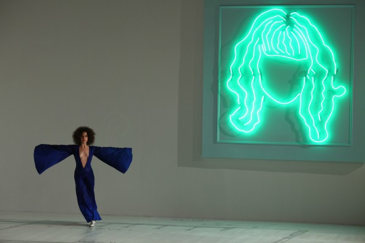

-
On Devotion
by Christine Shan Shan Hou March 21, 2012
Sarah Michelson's "Devotion Study #1—The American Dancer," © Paula Court.
The observation of devotion could finish you…
–Erín Moure, Pillage Laud
The act of going to performances occupies a bit of an obsessive and irrational space in my life. I liken it to ritual tied in with a sense of yearning and loneliness. There are feelings of uncertainty. Thus, when British choreographer, Sarah Michelson says: “People need faith. You can’t argue if faith exists. It’s here,” near the end of the Devotion Study #1 – The American Dancer, it resonates with me. I succumb.
——
The title of Michelson’s performance is accompanied with a long quote from George Balanchine:
Superficial Europeans are accustomed to say that American artists have no “soul.” This is wrong. America has its own spirit — cold, crystalline, luminous, hard as light…Good American dancers can express clean emotion in a manner that might almost be termed angelic. By angelic I mean the quality supposedly enjoyed by the angels, who, when they relate a tragic situation, do not themselves suffer.
——
A blueprint of The Whitney Museum of American Art is painted in gray on the white gallery floor. Michelson’s presence haunts us in the form of a neon-green, light drawing — a faceless portrait. The portrait is reflected in the polygonal window that juts out of the building on the opposite gallery wall. Audience members sit along both sides of the elevator entrance. We wait to the sound of a metronome rising from the speakers on the gallery floor. A dense, cluster of lights hangs from the center of the ceiling like a mechanical sun. The space is vast and the feeling is empty.
Nicole Mannarino enters stage right, hair teased out into an Afro. She is wearing white jazz shoes and a deep blue (think Yves Klein) body suit with a deep V cut down to the center of her torso. The sleeves and pant legs flare out at the ends like budding wings.
She begins taking quick and spritely steps backwards, forming small circles over the blueprint. The circles grow larger and then shrink again. She pauses at the back corner.
America has its own spirit.
It is faceless.
——
Whitney Biennial co-curator, Jay Sanders, and Michelson sit amongst the audience, and read a text written for the performance by playwright Richard Maxwell. Their dialogue (Sanders reads for Maxwell) touches upon the existential afterthoughts of “life after Devotion ” which premiered at The Kitchen in January 2011. The text is replete with narcissism and references to porn and drugs, a bit of a macho, mocking undertone especially when spoken over Mannarino’s physically intense and repetitive movement.
Mannarino exits and then reenters. The conversation replays itself.
——
Sarah Michelson "Devotion Study #1—The American Dancer," © Paula Court.
Eleanor Hullihan in a short, olive-green dress with similar flared sleeves joins Mannarino in her tiring task. They circle together, backwards, faster and faster. Sweat stains start to form on Mannarino’s back.
I dip in and out
The maniacal ordinary
The wet sweat
——
Richard Maxwell: The world has come to an end.
Sarah Michelson: You seem to get so trapped by your own thoughts.Richard Maxwell: I want to learn. I do.
——
The backwards circles continue, mercilessly. Hullihan and Mannarino have their arms out like airplane wings, like angels. Occasionally they tilt to the left or go on tiptoes. Hullihan unexpectedly breaks away from Mannarino.
——
A Klee painting name “Angelus Novus” shows an angel looking as though he is about to move away from something he is fixedly contemplating. His eyes are staring, his mouth is open, his wings are spread. This is how one pictures the angel of history. His face is turned toward the past. Where we perceive a chain of events, he sees one single catastrophe which keeps piling wreckage upon wreckage and hurls it in front of his feet.
–Walter Benjamin, “Theses on the Philosophy of History”
It should be an independent and self- relying unit, exposed to history…
–Marcel Breuer, architect statement for The Whitney Museum, 1964
——
There is cruelty in the repetition, and exhaustion within time. There is a ticking metronome accompanied with a persistent, minimalist soundtrack — a lone drone chord, with nearly imperceptible variations. Is the sound alone enough to drive you mad? Are the metronome and the dancers’ steps speeding up? Is there an opportunity for transcendence? What does it mean to create a dance that almost only involves moving backwards in circles for 90 minutes? What does Devotion Study #1 – The American Dancer have to do with the history of The Whitney building? What does it mean for a space to be “exposed to history”? What does it mean for a dance? Is this a dance about the history of dance? Are they angels of history? Patterns emerge as they try over and over again, rapidly swirling around. Endlessly.
I wish I could come up with answers — meanings. I wish I could make obvious connections, but I can’t. The dancers elude it; it’s their Sisyphean fate.
——
Maggie Cloud joins the two women in a tight-fitting white, long-sleeved leotard; followed by a shirtless James Tyson in effeminate, black bell-bottom pants. Mannirino’s uniform is soaked with sweat, forming a deep V on the back of her uniform. She wears the same blank face. You cannot see her pain, but only imagine it. She becomes increasingly difficult to watch. A dark angel. A clean emotion.
——
A circle is a necessity. Otherwise you would see no one. We each have our circle. How old is America. Very old.
– Gertrude Stein, A Circular Play: A Play in Circles
——
Moriah Evans enters in a gray, shapeless over-sized shirt. They are beautiful as a group, a flock of flying bodies. Evans performs circles alone stage right, while the four other dancers circle backwards stage left.
She is separated from the others throughout her brief time on stage. We feel her lonely frustration. Faith is a cruel beast.
Punishment is moving backwards in time.
Wide, wide circles.
——
If we concentrate our attention on trying to solve a problem of geometry, and if at the end of an hour we are no nearer to doing so than at the beginning, we have nevertheless been making progress each minute of that hour in another more mysterious dimension. Without our knowing or feeling it, this apparently barren effort has brought more light into the soul.
–Simone Weil, Waiting for God
——
The air is heavy with impatience, but you must wait.
What is progress for Michelson? Is it in repetition? Perception?
I start to notice the little details: the drawing of Michelson’s face on the white, circular patches on their shoes; as if she were God, controlling every step.
——-
Sarah Michelson Devotion Study #1—The American Dancer, © Paula Court.
At what seems to be the climax of the performance, all the dancers (except Evans, who continues to circle by herself before swiftly exiting) take a stance along the back wall while the cluster of lights grows steadily brighter. Their shadows, triple, quadruple, quintuple, on the white wall beneath the glowing sun. Kira Alker in a brown body suit and horse head makes a brief appearance. She accompanies the five figures as they alternate their supporting leg for several, long minutes.
I don’t know what I look for when I go to a performance. I don’t know what I’m after. I am alleviated…hard as light.
——
Circles again.
Over and over and over and over.
Cloud and Tyson exit.
——
She can admire me. She can always admire me. Do not try circles exclusively.
–Gertrude Stein, A Circular Play: A Play in Circles
——
Hullihan stops and takes a series of stunted leaps forward in small circles.
Repetition can be likened to play.
A meditation on dance and faith.
The untidiness of intention.
The grueling nature of doubt.
——
Sarah Michelson: There’s insignificance in significance.